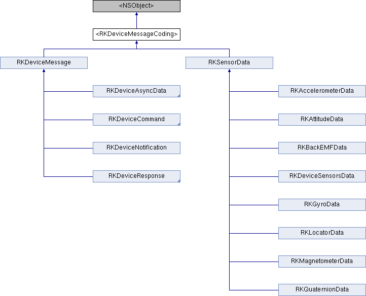

RobotKit API
Main Page
Related Pages
Classes
Files
Class List
Class Index
Class Hierarchy
Class Members
All
Classes
Files
Functions
Variables
Typedefs
Enumerations
Enumerator
Properties
Pages
Instance Methods
|
List of all members
<RKDeviceMessageCoding> Protocol Reference
abstract
Inheritance diagram for <RKDeviceMessageCoding>:

Instance Methods
(id)
-
initWithDeviceMessageDecoder:
(void)
-
encodeWithDeviceMessageEncoder:
The documentation for this protocol was generated from the following file:
RobotKit/
RKDeviceMessageCoding.h
Generated on Mon Jan 28 2013 13:44:18 for RobotKit API by
1.8.2
 1.8.2
1.8.2